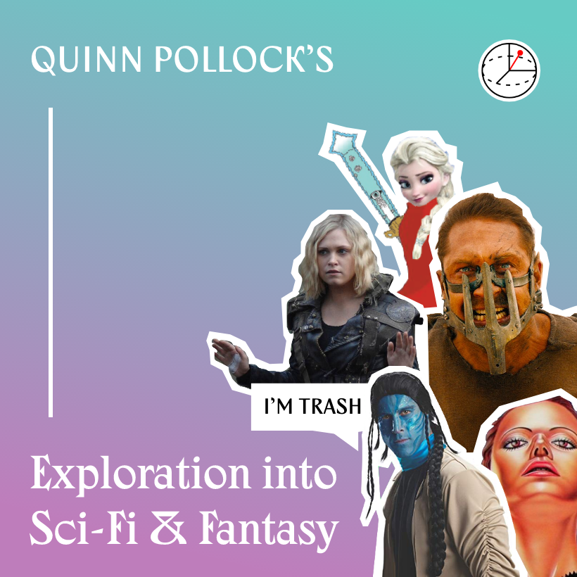

GNDS-335 Science-Fiction & Fantasy Scrapbook Auxiliary Media
The following audio-dramas are to be listened to alongside their respective chapters. A digital version of the entire scrapbook can be found here (as PDF).

The following audio-dramas are to be listened to alongside their respective chapters. A digital version of the entire scrapbook can be found here (as PDF).